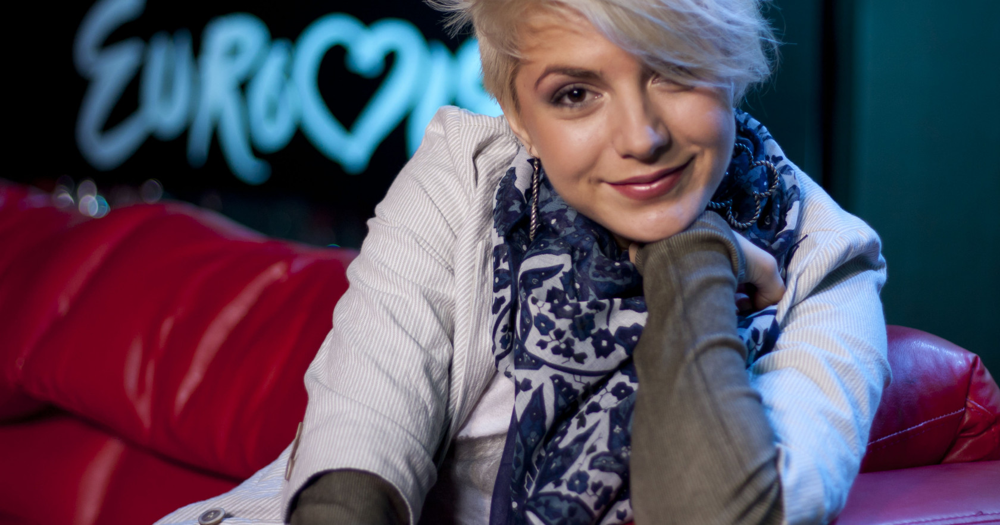

България в Eurovision Song Contest
Poli Genova
Тя е родена на 10 февруари 1987 г. в София и започва кариерата си на певица на осемгодишна възраст като
член на детския вокален ансамбъл Bon-Bon.
Поли започва да пее на 4-годишна възраст в популярния детски вокален ансамбъл с Националния дворец на
децата.
По-късно тя се присъединява към детския вокален ансамбъл Bon-Bon след създаването му през
1995
г. и по този начин започва професионалната си певческа кариера.
Нейният глас е запазената марка на Bon-Bon. В продължение на шест години Поли водеше едноименното детско
телевизионно предаване.
Тогава тя започва да пее заедно с такива известни български поп певци като
Георги Христов, Йорданка Христова и Нели Рангелова.
Тя участва заедно с Нели Рангелова и Бон-Бон в
конкурса за песен „Златният Орфей“ и
те спечелиха специалната награда на Българската национална
телевизия.
